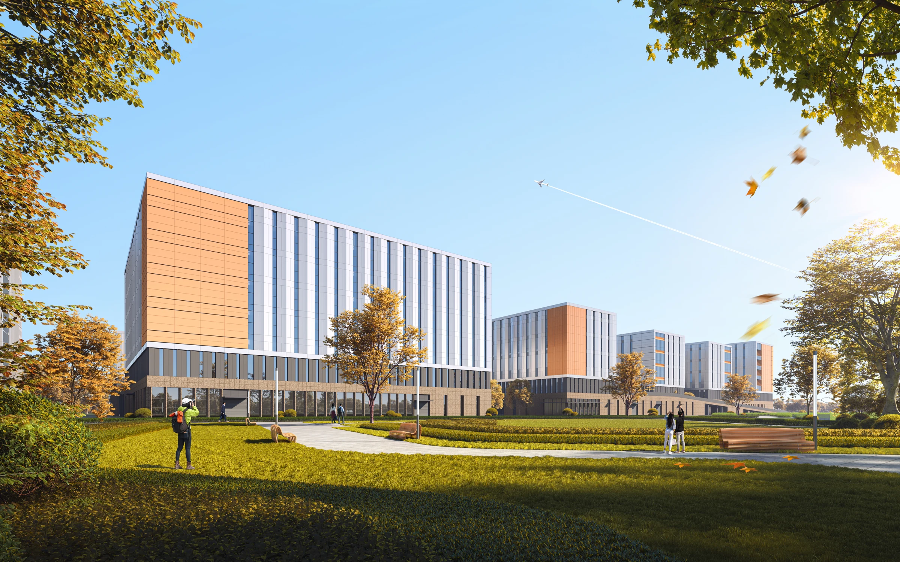

NANGANG TECHNOLOGY ACCELERATOR
南岗科技成果加速器（北区）
双首层与立体生产
安徽 · 合肥
智能制造 · 工业上楼 / 2023.09

- 地点
- 安徽 · 合肥
- 年份
- 2023.09
- 类型
- 智能制造 · 工业上楼
- 阶段
- 修建性详细规划方案
- 参与
- 项目设计参与 · 团队协作
- 设计团队
- 深圳市建筑设计研究总院有限公司合肥分院
PROJECT / 项目
项目位于合肥高新区，面向智能制造类企业的生产空间需求。以多层厂房为主体，通过坡道、平台和垂直运输组织货运，将生产空间、园区配套与公共景观纳入同一套布局。
01 / DESIGN双首层的生产组织
通过坡道将货车引入二层平台，再由中央通道分流至各栋厂房，拓展直接到达的生产界面。
02 / DESIGN清楚的园区秩序
生产建筑成组排列，配套与入口结合布置，协调生产运输、人员到达与园区形象。
03 / DESIGN结构与使用的适应性
以规整柱网、清晰的交通核及多层生产平面，回应不同企业的使用需求。